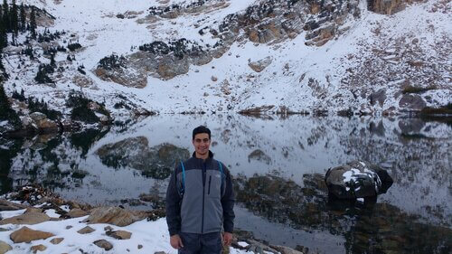

The journey I have embarked upon has been defined by resilience and an unwavering pursuit of growth.
Overcoming challenges has shaped my character and fueled my passion for continuous self-improvement,
defining my commitment to personal and professional development.
My Source of Drive
Drawing inspiration from the transformative power of perseverance and the profound impact of meaningful
human connections, my drive is rooted in the desire to make a pohave shaped my dedication to excellence and my vision for contributing to the betterment of the community.
My Professional Journey
With a diverse professional background spanning various industries, I have acquired a wealth of experience
in project management, data analysis, and global supply chain operations. Through these experiences, I have
gained valuable insights and developed a comprehensive understanding of complex business landscapes.
My Skills
With a diverse professional background spanning various industries, I have acquired a wealth of experience
in project management, data analysis, and global supply chain operations. Through these experiences, I have
gained valuable insights and developed a comprehensive understanding of complex business landscapes.

My Hobbies
Beyond my professional endeavors, I find joy in exploring the outdoors, engaging in continuous learning,
participating in Crossfit, and embarking on adventures through travel. These hobbies provide me with a
well-rounded perspective that enhances my creativity and problem-solving abilities, contributing to a
balanced approach to both life and work.